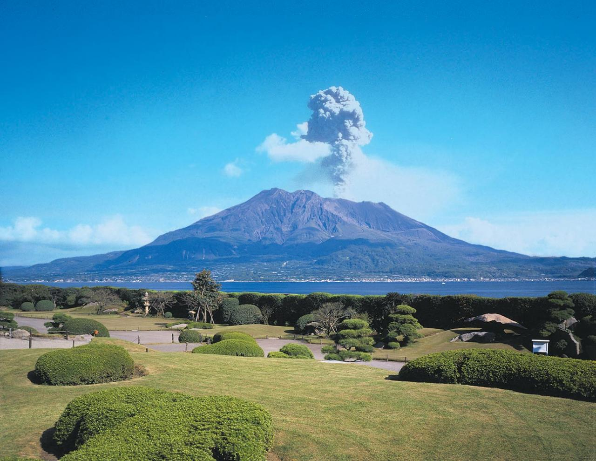
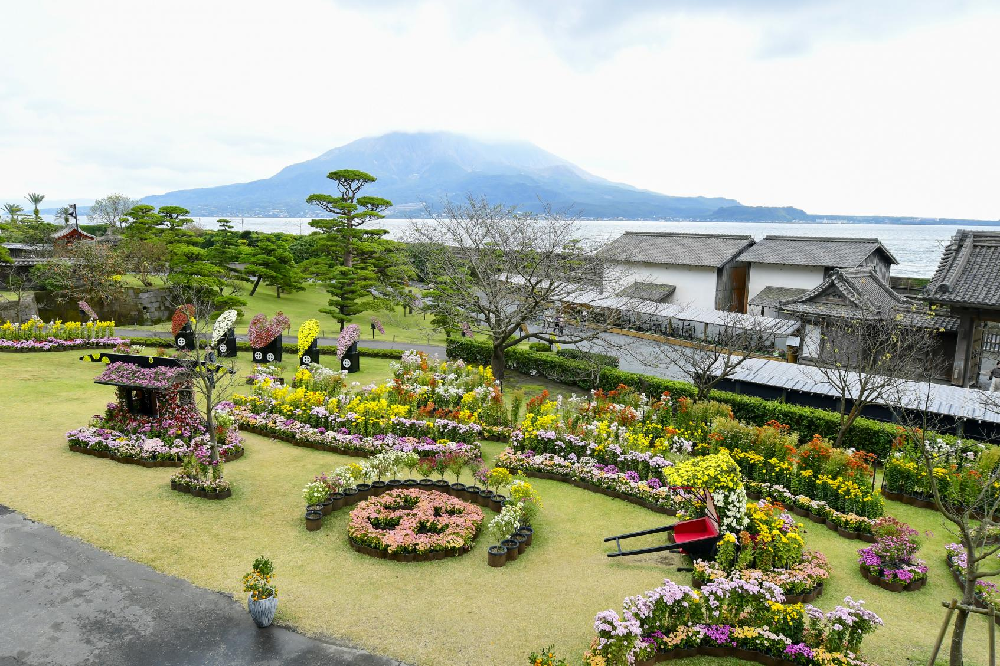
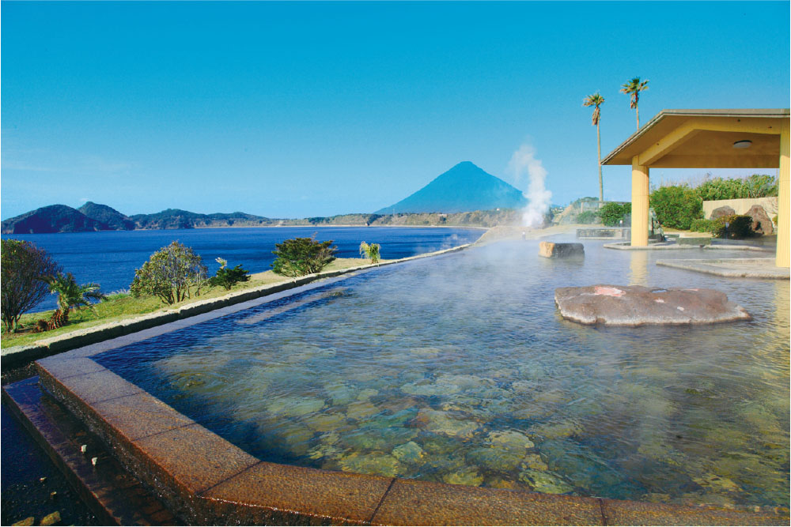
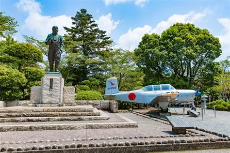
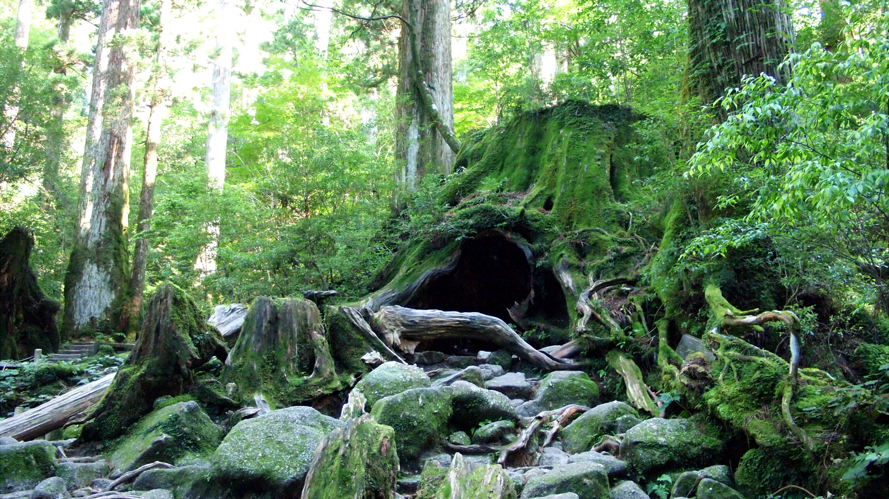

歴史と自然が息づく鹿児島。風情豊かな絶景スポットや文化遺産など、必見の観光名所を5か所ご紹介します。
1. 桜島
鹿児島の象徴とも言える活火山。フェリーでアクセスも便利で、展望台からの迫力ある眺めは圧巻です。噴火の様子を間近に体感できます。
2. 仙巌園（せんがんえん）
島津藩の庭園として造られた名勝。桜島を望む美しい庭園と歴史的建築物が見どころです。春には桜が彩りを添えます。
3. 指宿温泉（いぶすきおんせん）
砂むし温泉で有名な癒しの温泉地。海岸で温かい砂に埋もれてリラックスできるユニークな体験ができます。
4. 知覧特攻平和会館
太平洋戦争中の特攻隊に関する資料を展示する施設。平和の尊さを静かに考えさせてくれる場所です。
5. 屋久島（やくしま）
世界自然遺産に登録された神秘の島。縄文杉や苔むす森など、太古の自然が残る絶景スポットとして知られています。